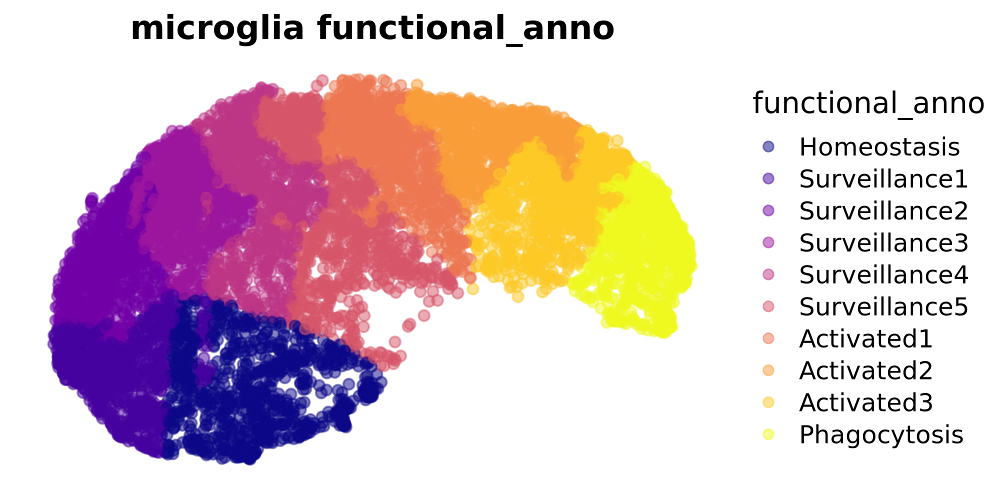
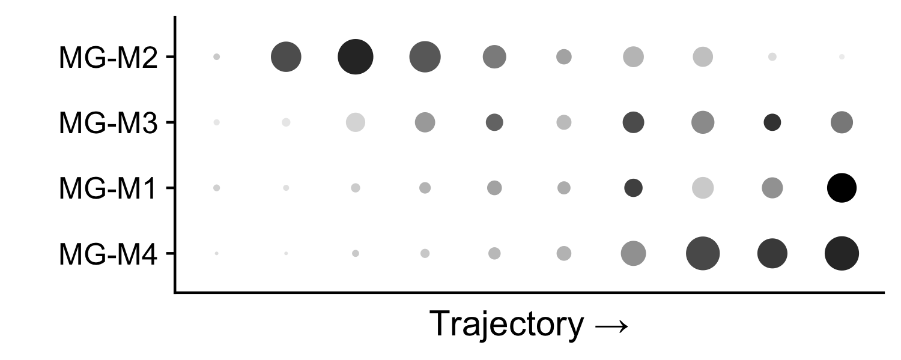
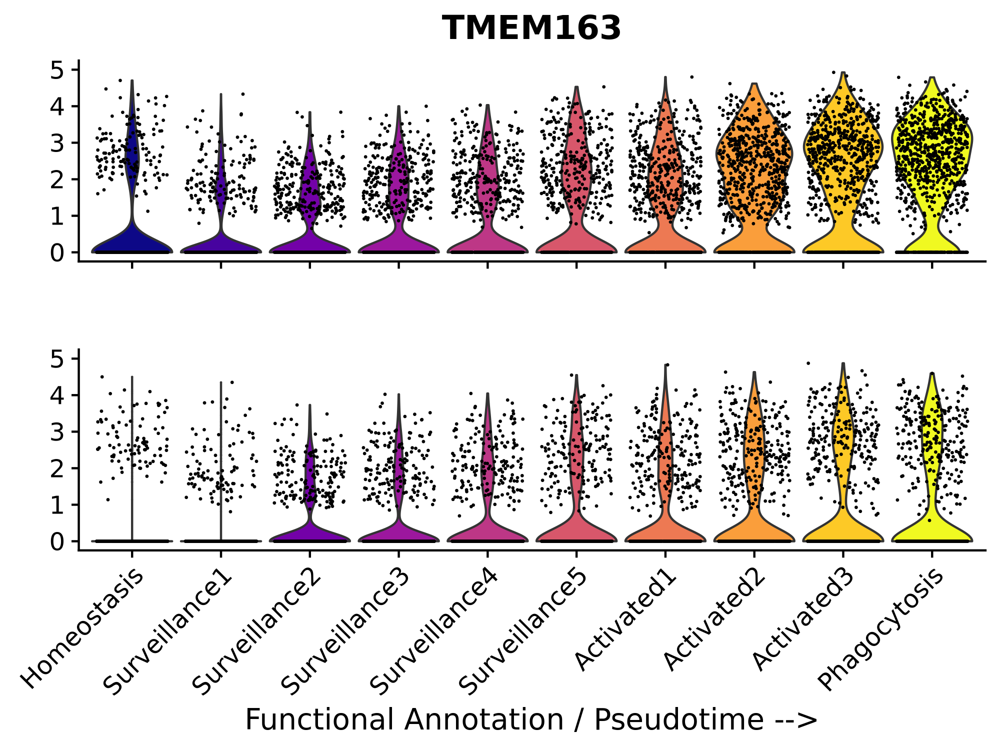
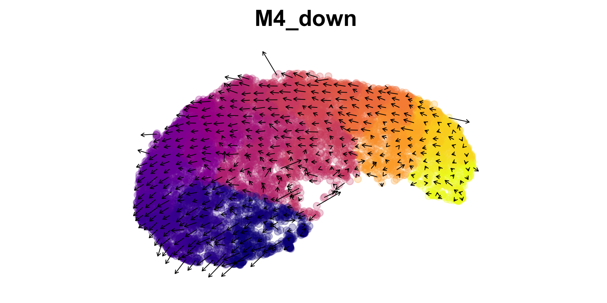
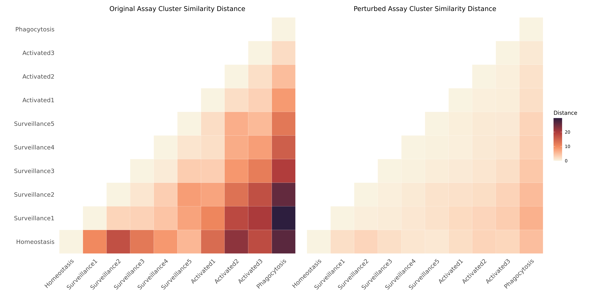
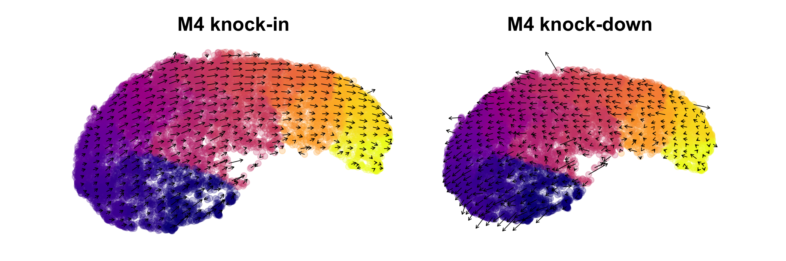

co-expression module perturbation analysis
basic_tutorial.RmdCompiled: 28-10-2024
Source: vignettes/basic_tutorial.Rmd
Introduction
This tutorial covers the basics of using
compact to perform module perturbation
analysis on co-expression network/module on single-cell data.
This tutorial covers the basics of using
compact to perform in-silico pertubation
experiments in single-cell transcriptomics data. For this tutorial we
will use an integrated single-nucleus RNA-seq dataset of microglia from
three different studies of Alzheimer’s disease, as we described
previously in the hdWGCNA
paper.
The in-silico perturbations that we demonstrate in this tutorial are based on gene co-expression modules, which are unbiased clusters of genes that are highly co-expressed in a gene-gene co-expression network. In order to run these pertubations, we first need to perform co-expression network analysis and group genes into modules by running hdWGCNA. This has already been run on the tutorial microglia dataset, where we have identified four gene modules.
Load the dataset
Download the tutorial dataset from these Google Drive links:
First we load the required R libraries and the tutorial dataset. When loading the tutorial dataset, you need to update the filepath to the co-expression adjacency matrix (TOM) within the Seurat object (shown below).
library(tidyverse)
library(cowplot)
library(patchwork)
library(Seurat)
library(velocyto.R)
library(hdWGCNA)
library(compact)
theme_set(theme_cowplot())
# set random seed for reproducibility
set.seed(12345)
# load the processed alzheimer's microglia dataset
seurat_obj <- readRDS(file='AD_MG_hdWGCNA_COMPACT_tutorial.rds')
# update the path to the co-expression network adjacency matrix
net <- GetNetworkData(seurat_obj)
net$TOMFiles <- 'AD_MG_TOM.rda' # it is better to use the absolute path
seurat_obj <- SetNetworkData(seurat_obj, net)If you have not already done so, we need to construct a nearest-neighbors graph in the Seurat object. This is a key step in the typical single-cell clustering pipeline.
seurat_obj <- FindNeighbors(
seurat_obj,
reduction='harmony',nearest neighbors?
assay = 'RNA',
annoy.metric = 'cosine'
)Next we visualize the clusters in this dataset as a UMAP plot.
# Get the UMAP embedding from the seurat object
emb <- Reductions(seurat_obj, 'umap')@cell.embeddings
# make a dataframe to plot with ggplot
plot_df <- as.data.frame(emb)
plot_df$functional_anno <- seurat_obj$functional_anno
# plot with ggplot
p <- plot_df %>%
ggplot(aes(x=UMAP_1, y=UMAP_2, color=functional_anno)) +
scale_color_viridis_d(option = "plasma") +
rasterise(geom_point(size=2, alpha=0.5), dpi = 300) +
ggtitle("microglia functional_anno") +
hdWGCNA::umap_theme()
p
Perform in-silico module perturbation
In this example, we will perform an in-silico knock-down for one of our microglia co-expression modules. First, let’s look at the expression level of these modules (module eigengene).
# add module expression levels (MEs) to the seurat metadata
MEs <- GetMEs(seurat_obj)
meta <- seurat_obj@meta.data
seurat_obj@meta.data <- cbind(meta, MEs)
# dotplot
p <- DotPlot(
seurat_obj, features=c('MG-M4', 'MG-M1', 'MG-M3', 'MG-M2'),
group.by='functional_anno'
) +
coord_flip() +
scale_color_gradient2(high='black', mid='grey75', low='grey99') +
theme(
axis.text.x = element_blank(),
axis.ticks.x = element_blank()
) + ylab('Trajectory →') + xlab('') + NoLegend()
p
The expression of microglia module M4 is concentrated at the end of the trajectory, within the activated microglia population. Next we will perform a knock-down experiment of this module, and we will predict how this perturbation will alter cellular states.
Apply a knock-down using ModulePerturbation
Here we use the function ModulePerturbation to apply an
in-silico knock-down of module MG-M4. This function consists of three
main steps, which are all conveniently included in this function.
Apply a primary perturbation to the hub genes of the co-expression module. For each hub gene, we perform zero-inflated count data regression to model the observed gene expression distribution. We simulate a perturbation by sampling from this distribution, then adding or subtracting the sampled counts to the observed counts for a knock-in or a knock-down respectively.
Apply a secondary perturbation to all other genes in the co-expression module. The primary perturbation is propagated to other genes by exploiting the co-expression network structure. Genes with stronger connections in the network will exhibit a stronger perturbation.
Calculate cell-cell transition probabilities based on the observed gene expression matrix and the perturbed gene expression matrix.
For this analysis we will perform the primary perturbation on the top 10 hub genes of module MG-M4. Let’s check which genes we will be perturbing.
hub_genes <- GetHubGenes(seurat_obj, n_hubs=10) %>% subset(module == 'MG-M4')
hub_genes$gene_name[1] "PTPN2" "SLC11A1" "ACSL1" "SPATA6" "TBC1D14" "TMEM163" "ERC2"
[8] "DPYD" "CD163" "TLR2"
# provide a name for the perturbation, which will be stored in the Seurat object
perturbation_name <- 'M4_down'
# run a knock-down of the top 10 hub genes from MG-M4
# should take 2-3 min to run
seurat_obj <- ModulePerturbation(
seurat_obj,
mod = "MG-M4",
perturb_dir = -1, # negative indicates knock-down, positive indicates knock-in
perturbation_name = perturbation_name,
graph = 'RNA_nn',
n_hubs = 10
)The main ouputs of this function are a “perturbed” gene expression matrix, and a cell-cell transition matrix, which we can access from the Seurat object using the following code.
# get the perturbed expression matrix
X_per <- GetAssayData(
seurat_obj, assay=perturbation_name,
layer='counts'
)
# get the cell-cell transition matrix
tp <- Graphs(seurat_obj, paste0(perturbation_name, '_tp'))Next, let’s compare the observed and perturbed gene expression distributions for one of the MG-M4 hub genes, TMEM163. We expect that in the pertubed matrix, the expression of TMEM163 will be lower than in the observed matrix.
# Generate 10 colors from the plasma palette
plasma_colors <- viridis::viridis(10, option = "plasma")
# group variable for vln plots
group.by <- 'functional_anno'
# one of the hub genes to be perturbed
cur_gene <- 'TMEM163'
p1 <- VlnPlot(seurat_obj, features = cur_gene, pt.size=0.1, group.by = group.by, assay='RNA') +
scale_fill_manual(values = plasma_colors) + # Use the extracted colors here
NoLegend() + xlab('') + ylab('') + ylim(0,5) +
theme(
axis.text.x = element_blank(),
plot.margin=margin(c(0,0,0,0))
)
p2 <- VlnPlot(seurat_obj, features = cur_gene, pt.size=0.1, group.by = group.by, assay=perturbation_name) +
scale_fill_manual(values = plasma_colors) + # Use the extracted colors here
NoLegend() + ylab('') + ylim(0,5) + theme(
plot.margin=margin(c(0,0,0,0))) + ggtitle('') + xlab('Functional Annotation / Pseudotime -->')
p1 / p2
Visualize predicted cell transitions after perturbation
Here we will visualize the predicted cell-cell transitions after the
in-silico knock-down of MG-M4. Similar to other methods like RNA Velocity or
CellOracle, we
visualize the inferred transitions as a vector field overlaid on a
dimensionality reduction. We include the function
PlotTransitionVectors to generate this plot. This function
leverages some code from the R package velocyto.R, however
in a future update we would like to remove this dependency since this
package can be difficult to install on some machines.
p <- PlotTransitionVectors(
seurat_obj,
perturbation_name = perturbation_name,
reduction = 'umap',
color.by='pseudotime',
grid_resolution = 25
)
p <- p +
NoLegend() +
scale_color_gradientn(colors=viridis::plasma(256)) +
coord_equal() +
ggtitle(perturbation_name)
p
To generate the vector field, the cell-cell transition probabilities computed for this perturbation are used to infer the cells with similar expression profiles, and vectors are shown between these cells. In order to avoid overcrowding the plot, these vectors are averaged in a grid rather than showing a vector for each cell.
Compare cell state similarity before and after perturbation
To further analyze the effect of the perturbation, we compute the E-distance between different functional annotations within the original and perturbed Seurat objects. The E-distance helps assess the similarity between different functional cell states present in the dataset.
First, we calculate energy distance between clusters in the observed
gene expression matrix using the function
ComputeDistance.
# Calculate similarity distance for original scRNA-seq data, method selected "edist" - energy distance
df_edist_original <- ComputeDistance(
seurat_obj,
groupby = 'functional_anno',
reduction = 'pca',
method = "edist",
verbose = TRUE
)
# # Define your custom order
custom_order <- levels(seurat_obj$functional_anno)
# Rearrange rows and columns of df_edist_observed based on the custom order
df_edist_original_reordered <- df_edist_original[custom_order, custom_order]
# View the reordered dataframe
df_edist_original_reorderedOutput
# Homeostasis Surveillance1 Surveillance2 Surveillance3
# Homeostasis 0.000000 10.140967 17.220091 12.1832043
# Surveillance1 10.140967 0.000000 2.866413 3.1124290
# Surveillance2 17.220091 2.866413 0.000000 1.2850047
# Surveillance3 12.183204 3.112429 1.285005 0.0000000
# Surveillance4 8.723064 4.462216 3.529919 0.7661988
# Surveillance5 5.735601 7.660914 8.219343 3.6764471
# Activated1 13.835812 10.549585 7.522241 3.5081678
# Activated2 22.369534 18.084185 13.030198 8.7718675
# Activated3 17.792197 20.061153 17.297088 11.6027919
# Phagocytosis 26.392094 29.687218 25.688176 19.5139817
# Surveillance4 Surveillance5 Activated1 Activated2 Activated3
# Homeostasis 8.7230645 5.735601 13.835812 22.369534 17.792197
# Surveillance1 4.4622158 7.660914 10.549585 18.084185 20.061153
# Surveillance2 3.5299193 8.219343 7.522241 13.030198 17.297088
# Surveillance3 0.7661988 3.676447 3.508168 8.771868 11.602792
# Surveillance4 0.0000000 1.301993 1.908912 6.800320 8.081606
# Surveillance5 1.3019930 0.000000 2.087510 6.593177 5.495311
# Activated1 1.9089124 2.087510 0.000000 2.014579 3.216930
# Activated2 6.8003204 6.593177 2.014579 0.000000 1.950235
# Activated3 8.0816058 5.495311 3.216930 1.950235 0.000000
# Phagocytosis 15.4674423 12.337110 8.521408 5.171625 2.154714
# Phagocytosis
# Homeostasis 26.392094
# Surveillance1 29.687218
# Surveillance2 25.688176
# Surveillance3 19.513982
# Surveillance4 15.467442
# Surveillance5 12.337110
# Activated1 8.521408
# Activated2 5.171625
# Activated3 2.154714
# Phagocytosis 0.000000Next, we perform a similar analysis on the perturbed Seurat assay ‘M4_down’
# Set the default assay to the perturbed assay and prepare the data
seurat_obj_perturbed <- seurat_obj # set up a new seurat object to avoid confusion
DefaultAssay(seurat_obj_perturbed) <- "M4_down"
seurat_obj_perturbed <- FindVariableFeatures(seurat_obj_perturbed, selection.method = "vst", nfeatures = 2000)
seurat_obj_perturbed <- ScaleData(seurat_obj_perturbed)Run PCA for the perturbed data and please remember to change the ‘reduction.name’
seurat_obj_perturbed <- RunPCA(seurat_obj_perturbed, features = VariableFeatures(object = seurat_obj_perturbed), reduction.name = "M4_down_pca")
seurat_obj_perturbed@reductionsOutput
> seurat_obj_perturbed@reductions
$umap
A dimensional reduction object with key UMAP_
Number of dimensions: 2
Projected dimensional reduction calculated: FALSE
Jackstraw run: FALSE
Computed using assay: RNA
$pca
A dimensional reduction object with key PC_
Number of dimensions: 50
Projected dimensional reduction calculated: FALSE
Jackstraw run: FALSE
Computed using assay: RNA
$harmony
A dimensional reduction object with key harmony_
Number of dimensions: 50
Projected dimensional reduction calculated: TRUE
Jackstraw run: FALSE
Computed using assay: RNA
$M4_down_pca
A dimensional reduction object with key m4_down_pca_
Number of dimensions: 50
Projected dimensional reduction calculated: FALSE
Jackstraw run: FALSE
Computed using assay: M4_down
Compute similarity distance for the perturbed data
# ComputeDistance
df_edist_perturbed <- ComputeDistance(seurat_obj_perturbed, groupby = 'functional_anno', reduction = 'M4_down_pca', method = "edist", verbose = TRUE)
df_edist_perturbed
# Rearrange rows and columns of df_edist_observed based on the custom order
df_edist_perturbed_reordered <- df_edist_perturbed[custom_order, custom_order]
# View the reordered dataframe
df_edist_perturbed_reorderedOutput
> df_edist_perturbed
Phagocytosis Surveillance3 Surveillance2 Activated1 Surveillance1
Phagocytosis 0.0000000 4.1887166 5.3468811 1.9114647 6.367927
Surveillance3 4.1887166 0.0000000 0.3544971 0.8140641 0.702068
Surveillance2 5.3468811 0.3544971 0.0000000 1.6971191 0.444851
Activated1 1.9114647 0.8140641 1.6971191 0.0000000 2.354567
Surveillance1 6.3679270 0.7020680 0.4448510 2.3545673 0.000000
Surveillance4 3.3193247 0.2185912 0.8524824 0.3940233 1.108151
Activated2 1.6043523 1.2675249 2.0982363 0.3861708 2.864140
Surveillance5 2.9806149 0.5994561 1.5770397 0.4120399 1.629711
Homeostasis 5.0451679 1.9123500 2.8172922 2.0402917 1.892958
Activated3 0.9335111 1.9314490 3.0544205 0.5010339 3.670300
Surveillance4 Activated2 Surveillance5 Homeostasis Activated3
Phagocytosis 3.3193247 1.6043523 2.9806149 5.045168 0.9335111
Surveillance3 0.2185912 1.2675249 0.5994561 1.912350 1.9314490
Surveillance2 0.8524824 2.0982363 1.5770397 2.817292 3.0544205
Activated1 0.3940233 0.3861708 0.4120399 2.040292 0.5010339
Surveillance1 1.1081507 2.8641397 1.6297111 1.892958 3.6702999
Surveillance4 0.0000000 0.9458629 0.2065312 1.271465 1.2788325
Activated2 0.9458629 0.0000000 0.8679631 2.958652 0.3551624
Surveillance5 0.2065312 0.8679631 0.0000000 1.029319 0.9134280
Homeostasis 1.2714649 2.9586525 1.0293188 0.000000 2.7488030
Activated3 1.2788325 0.3551624 0.9134280 2.748803 0.0000000
We visualize the similarity distance matrices for both the original and perturbed data using a heatmap. This will allow us to compare the functional clusters’ similarity or difference before and after the perturbation
#---------------------------
# NOTE plot heatmap
library(ggplot2)
library(reshape2)
library(scales)
library(patchwork) # For arranging plots side by side
# # Example usage with default color palette
order_level <- custom_order
# HeatmapDistance()
ht <- HeatmapDistance(df_original = df_edist_original, df_perturbed = df_edist_perturbed, custom_order = order_level)
ht
We can see that the distance is smaller in the heatmap on the right, which indicates that the activated cells have become transcriptomically more similar to the homeostatic cells after our in-silco perturbation.
Apply a knock-in
In this step, we will simulate another in-silico perturbation with
ModulePerturbation to up-regulate the same co-expression
module, and we will visualize the resulting transition vector field with
PlotTransitionVectors. The only difference here is that we
set perturb_dir=1 for an up-regulation whereas previously
we had perturb_dir=-1 for a down-regulation.
# apply the up-regulation of module M4
perturbation_name <- 'M4_up'
seurat_obj <- ModulePerturbation(
seurat_obj,
mod = "MG-M4",
perturb_dir = 1, # positive value indicates knock-in, all
perturbation_name = perturbation_name,
graph = 'RNA_nn',
n_hubs = 10,
)
# plot the transition vectors
p1 <- PlotTransitionVectors(
seurat_obj,
perturbation_name = "M4_up",
reduction = 'umap',
color.by='pseudotime',
grid_resolution = 25,
point_size=2 ) +
NoLegend() +
scale_color_gradientn(colors=viridis::plasma(256)) +
coord_equal() +
ggtitle("M4 knock-in")
# plot the transition vectors
p2 <- PlotTransitionVectors(
seurat_obj,
perturbation_name = "M4_down",
reduction = 'umap',
color.by='pseudotime',
grid_resolution = 25,
point_size=2 ) +
NoLegend() +
scale_color_gradientn(colors=viridis::plasma(256)) +
coord_equal() +
ggtitle("M4 knock-down")
p1 | p2
As expected, we can broadly see that the transition vectors indicate opposite affects of the knock-in and knock-down on the predicted cell states.